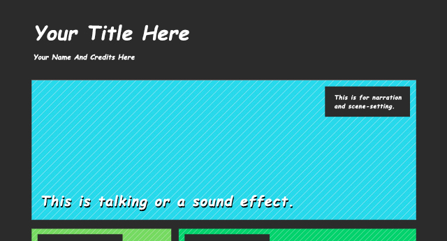
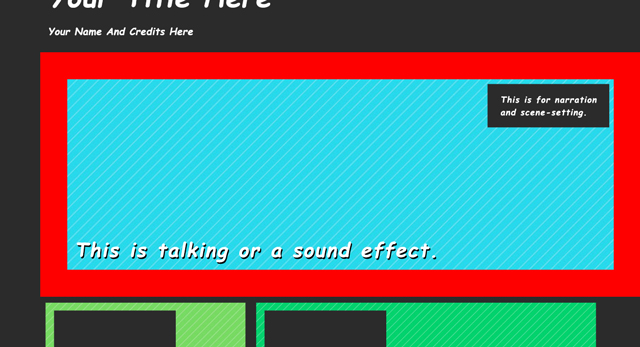
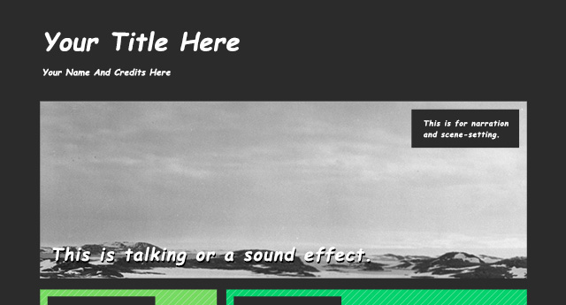
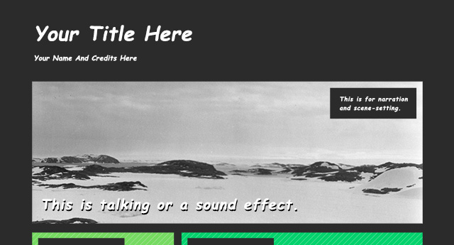
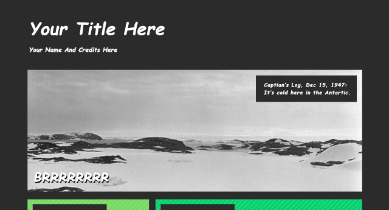
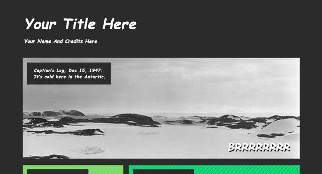
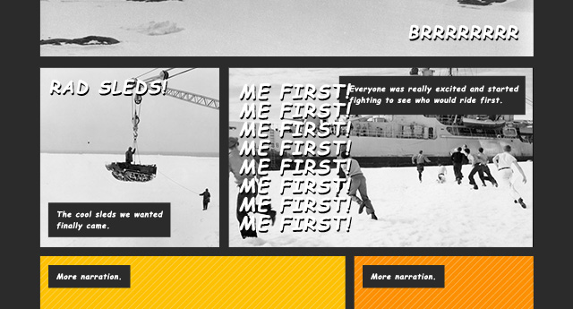
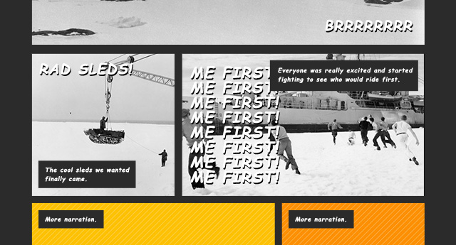
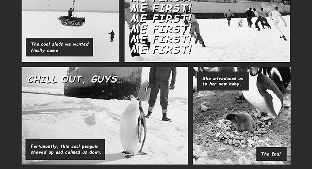

Ready to think inside the box? Install the template
Alright, let’s start building our comic. This project is a little different than some of the other Coder projects. We won’t be starting from scratch. We’ve put together a kit with all the parts you need to make your own comic - all you need to do is add the words and pictures. We’ll walk you through how each piece works, introducing some new concepts along the way.
The first thing you need to do is download and install the Comic Template app onto your Coder. Installing an app on Coder as simple as creating a new one.
- Download the comic_template.zip onto your computer or desktop. You can download it here.
- Click the box with the “+” on your Coder dashboard to start a new app.
- Instead of titling your app or picking a color, click the arrow button in the lower-left corner of the box.
- Find and select the “comic_template.zip file that you just downloaded.
- The new app should open up on Coder as well as appear on your dashboard and you’re ready to go!
Step 1: Take a look around

Now that you have the Comic Template app installed let’s look around (but don’t mess with anything just yet!)
- Let’s start with the preview. Click the eye symbol or the project name. Let’s start with the preview. Click the eye symbol or the project name.
- Go to the HTML tab.
- Notice how each panel that we saw in the preview has its own <div>.
- Notice also that the panel <div> have three other elements inside it: two <divs> with the text we saw, and an IMG tag.
- Now go to the CSS tab. Let’s look at some of the styles this kit uses.
- Notice that we’ve set up a unique #id for each panel and given them a bunch of properties. Some of them should be familiar, like width, height, and background-color. Others will seem new like overflow-hidden;, position: relative; and border.
- Go down to the bottom of the CSS code. You’ll notice that we’ve set up some classes for our text styles with familiar properties like font-family and color. You might also notice there are some new properties here too like margin and padding.
- Near the very bottom you see some classes that seem to be all about positioning. They have names like .right, .left, .top, and .bottom. You’ll also notice at the very bottom are three classes called .inback, .inmiddle, .infront.
Step 2: A quick tour of our panel

Now that we’ve seen the app. Let’s look at our panels and see how we can modify them.
Messing with the border.
- Go to you CSS and find the #id for the top panel, it’s called #panel1.
- Find the border property.
It should look like this:
border:10px solid #2b2b2b;
This is adding a 10 pixel dark grey solid border around our #panel1 <div> giving this panel, and our other panels, that classic comic feel. You’ll also notice that we’ve defined a height of 280px and width of 780px for our panel.
- Change the border to 50px and make it red and see what happens.
- Did you see how the whole box got bigger? That’s because properties like border, margin, and padding can add to the overall height and width of an object. When we changed the border to be 50px thick, we added 80px to the height and width.
- Change the border width back to 10px but feel free to change its color to whatever you want. Maybe even give different panels different colors.
Understanding overflow.
Next let’s see what overflow:hidden is doing.
- Delete the overflow:hidden line of code from #panel1 and take a look at your preview.
- See how the image in side the <div> is now popping out over the other panels on the page?
This will be useful for making our comics. I allows us to use images of various sizes and dimensions in our preset panels.
Step 3: Add a new picture

Alright, let’s start adding our own images and text and making our comic. For these next steps we will be using images and from our “cool” image bundle, showing wintry mix of arctic and antarctic exploration photos from the Smithsonian Institution’s archive. We will be making up a story to go with along with them. If you want to, you can copy what we’re doing. If you have a different story or images of your own, feel free to use those.
- Let’s start by getting rid of that placeholder in the top panel and substituting our scene-setting, landscape photograph.
- Open the media drawer of Coder and add a new file. We’re uploading the landscape.jpg image.
- Go to the HTML tab and swap out the img src, pasting the new landscape.jpg path in its place in between the ‘’ marks.
Our IMG tag looks like this:
<img src= "/static/apps/comic_complete/media/running.jpg" id="image3" class ="inback">
Step 4: Position the picture in the panel

Now we’ve placed our picture but it doesn’t look quite right. The image we’ve put in there is bigger than the panel and the part we want to see isn’t showing up. Let’s scale it down and move it around to make it fit.
- Go back to the CSS tab and find the image1 #id. We will use this to help position and size this image.
It looks like this right now:
#image1 {
position: absolute;
}
If you look at the #panel1 id you’ll see that it has the position: relative; property. These two things are part of the same system of CSS positioning.
CSS positioning properties help you place elements more precisely in relationship to one another then they would normally layout. Under normal circumstances HTML elements are positioned static which means they’re positioned according to the normal flow of the page.
Objects that are positioned absolute can be moved and placed relative to their first parent element (as long as that position is anything other than static, hence the need to apply it to our panel). So by applying a position: absolute property to our picture we can push it around, inside or panel. Let’s do that.
The first thing we need to do is just make the image smaller. The image we’ve added is pretty wide and we want it to fill the full width of the panel.
- Add a new width property to the #id. Set it to 100%. See how the width of the image now matches the width of the panel? You can also try using height:100%; or different percentages to help certain pictures fit better. Be careful about using height and width at the same time, though. It can stretch or bunch up your picture distorting it.
Now lets shift that image up a little bit. To do that we will give it a new positioning property and tell it how many pixels to move.
- Add a new bottom property and add a negative pixel dimension to push it up. This will push the image up by making the bottom edge of the image rest at a certain point outside our panel. To scoot our image where we want it we used -110px.
Our code looks like this:
#image1 {
position: absolute;
width: 100%;
bottom: -110px;
}
And that’s how we can position images within our panels no matter their original size or shape.
You can use the properties bottom, left, right, and top with pixel dimensions to move your images around.
Step 5: Write new text

Now that we’ve got a new picture let’s start writing our story.
Our template includes two different classes for comic text. One is designed with narration and scene setting in mind. The other is better for dialogue and sound effects.
- Back in the HTML tab find the <div> tags for our narration and big text.
- Add some new words!
- You may want to make a line break in your text. To do that you can add a <br> tag.
Step 6: Padding and positioning your text

Alright so you’ve written the text for the first panel of your comic. Maybe you don’t like how the text boxes look or where the text is positioned? Maybe it’s blocking someone’s face? Let’s change that.
Padding and Margin
Let’s start with messing around with the .narration class’s margin and padding. These are the properties that keep our text from touching the edge of the panel and the edge of the box they are in.
- Find the .narration class in the CSS.
- Find the padding property.
It should look like this:
Change it to something bigger, like 40px.
See the way the overall box gets bigger? That’s because we’ve increased the distance between the text and the inside edge of the box.
Now find the margin property.
It should look like this:
- Change it to 40px and see what happens.
- See how it pushes further away from the edge of the panel?
- When your done, change everything back to its padding and margin.
You can use these properties to change the text boxes if you don’t like the ones we’ve made.
left, right, top, and bottom
Now that we’ve played around with margin and padding let’s explore how to change the place on the panel the text actually appears.
- Go back to the HTML tab for a second.
- Take a look at the <div> for narration in the first panel. Notice that next to the “narration” class there are two other classes “top” and “right”
- Change “right” to “left” and see what happens. See how the narration box is now in the top left of the panel?
The Comic Creator template has four classes to help us position the text boxes quickly. They use the same absolute positioning principle that we used on our image.
Try using them to move your text into different corners of the panel. Find a placement that works for your image.
Step 7: Continue the the story on the next row

Alright let’s do the next panels! This is shaping up to be an interesting adventure.
- n the HTML tab, find the next two panels.
- Add new text and images.
- Use the positioning and width or height to adjust the image.
- Use the positioning classes to place the text.
Step 8: Stacking stuff

On our third panel we ran into a bit of a problem. We made a bunch of dialogue text and now its overlapping our narration text. It’d be nice if the dialogue was under the narration. Let’s change that.
Look at the very bottom of the CSS tab. Remember those classes called .inback, .inmiddle, .infront? We’re using them in our HTML. Let’s look at them in CSS.
p>It should look like this:
.inback {
z-index: 1;
}
.inmiddle {
z-index: 2;
}
.infront{
z-index: 3;
}
The z-index property determines how objects that are positioned (like the one’s we’re using) will stack on top of one another. Here, we’ve created three options and assigned a number to each, 1 being closest to the back and 3 being in the front.
Let’s go back to the HTML and give the dialogue in that panel the .inmiddle class to set it behind our narration.
Step 9: Finishing your comic

Now tell the rest of the story. Position and tweak the remaining images and text blocks to wrap-up your comic adventure.
Step 10: Sign it off
The last step is to give your comic a title and give some credit to yourself, and anyone else that helped contribute to your story. That’s it! Nice work. How did it turn out? Is it as “cool” as ours?